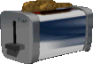

Erwin, glasses down his nose, looked up over the rim of his book at Sharron. "Sharron," He said, a sudden inquisitive tone other than his normal droll mumble, "How many existentialists does it take to screw in a light bulb?"
Maccas. MacDonalds. The only place to eat in style. THE place to be seen eating. In this town, MacDonalds wasn't just a restaurant, it was the Palace MacDonalds, one of the largest known MacDonalds in the history of all MacDonaldses. The Hilton Hotel of eat-in, take-away and drive-thru food franchise operations. Palace MacDonald was a stunning six storey, 10 star, top rating food palace, where service is personal, dinner comes on a silver plated stainless steel platter, wine is a must and after six pm, the topless bar and custom burger maker become available to a select amount of very special customers.
It was daytime, the next day, and at midday, the bell in the post office tower struck three times. Sharron worked at the post office, fetching boxes, vacuuming and shredding all the bits of paper that needed to be shredded. Actually, she liked the shredding part. She liked to feed in the shredded paper again and watch it all come out even finer, then use some sticky tape to stick it sort of together so that she could run it through sideways. This way, one piece of paper (the machine took one at a time) could take five or six minutes to shred. 'Although I'm not that smart, I'm not totally stupid either.' she was quoted of saying more than once (often in the same breath).
It was after lunch when Erwin sat glumly in the shop window, amongst his adaptors and power points. He was watching a great bandwagon draw slowly along the street towards the Tax Haven Casino, a multi billion dollar enterprise specialising in lots of fast cash. The large wagon was kept stopping to let people on- rarely did somebody get off. He could see quite a number of public figures, politicians, lawyers, public servants and movie stars boarding the bandwagon and driving off to the Tax Haven Casino, leaving strands of dispirited members of the public to crawl back to their gutter apartments and whimper at passers by.
The idea was simple and logical: Get a Gorilla. Put it under Sharron. Sharron drops down onto the big monkey. Sharron is saved. Go home and have some toast.
Which ever way it all happened, Erwin, the retired King of all the Toaster Power Cord Specialists, hand in hand with his wonderful girlfriend Sharron, the Shredder Queen of the local post office, walked dolefully off into the sunset, pausing only to get Cranium off somebody's roof. They all lived in naive absurdity, happily ever after.
Sharron was watching the TV, not realising that it was off. Sharron wasn't very interested in TV anyhow. She was more into boppy music on her personal HI-FI walkman- tunes like 'Tie a yellow ribbon' and 'Down by the riverside - A Scott Joplin Extraordinaire'. It was extraordinary that Erwin would ask her a question, especially one like that. She didn't even know what an exitspatula, or whatever it was he said, is anyway.
"A Spoonful," She eventually calculated.
"No. Two. One to screw in the new bulb and one to observe how the lightbulb itself symbolises a single incandescent beacon of subjective reality in a netherworld of endless absurdity reaching out towards a maudlin cosmos of nothingness."
"Oh," She changed the channel on the TV. Amazingly, it was the same as the one she had just changed from. Just as dull.
"Do you get it?" Erwin asked, a mad look of glee in his eye.
Sharron had a thought. Thoughts were quite rare for Sharron, so when they did come, they had to be worth it. "Not when you're here. How do you get them into the light bulb, anyhow?"
It was a good one. Erwin was absolutely stunned. His brain just stopped. Firstly, Sharron had said two sentences- Two whole sentences in the one breath. And they didn't really make sense, to him anyway. He pushed his glasses back up his nose until they squashed at his eyes, then lifted the book up again to be lost again in the tumultuous words of aspiring insanity- 'Cat in the Hat'.
Sharron had realised it too. Suddenly the entire universe of knowledge crashed down on her, like Mrs Bernard's laundry upstairs when she dropped it down the hole in the middle of the staircase so that she didn't have to carry it all the way down. She relevated in thought. She could actually hear lots of thoughts happening in her head- cogs clanging away, shots fired, the six o'clock news- Hang on! It wasn't thoughts. Silly Erwin had just turned on the TV! Oh well, it was almost epiphany.
Hoskins walked in. Somehow he had managed to: undo the three magnetic deadlocks, bypass the laser fed passive infra red centimeter wave radar ranging security cameras, evade the vicious genetic mutant hunting hounds and forget to knock before entering. Or, perhaps, Erwin was thinking of his other home that had all these things and Hoskins lived here and he lived there. Now he was confused.
"Hos, is this my home or yours?" He asked, putting the glorious book on the small craftwood table beside him, just next to the coffee he always had that went cold before he had even sipped it.
"Mine. Yours has all those nerdy security stuff things. Why?"
"I was just wondering where I was and why I am here, then, if that's where I am."
"You are here, at my home, to return the book you borrowed off me two weeks back," Hoskins informed. "You finished it yet?"
"Yes. I just finished then."
"Good. Sharron, lets you and Erwin go out for a movie, or something."
"Mmm."
Both Erwin and Sharron looked stupidly at each other, smiling, as they stood. It was a badly kept secret, but a secret all the same and nobody else should know. Erwin and Sharron were in love. Stupidly, madly in love. The first time Erwin had seen Sharron was when she had puked all over the back of his car after a ride on the ferris wheel at the fun park. Erwin hadn't gotten angry straight away. He just didn't realise what had happened. Not in the snow. The awful remnants of Sharron's fateful lunch had frozen on impact to the icy metal car body, and in the blizzard conditions had been smoothed over into a higher than usual lump of badly smelling snow. After she was finished decorating her environment, Sharron had looked through the glazed rear window of Erwin's Datsun 120Y, directly into the rear-view mirror, and into giant, brown eyes. Then the car thief drove off. Erwin, keys in hand, was just about to open the passenger side door and put his oversize stuffed gorilla that he won into the seat when the car drove away. Dazed and confused, he had wandered, gorilla in hand, over to Sharron. When Sharron looked at the shaggy furry head, the big doleful eyes, she fell in love. The she looked at Erwin, whose dull balding head collected icy flakes of white mush and distressed greenish eyes peeped out from behind square glasses. Ever since, Erwin and Sharron had been together.
As they left the small apartment, Erwin remembered all the times he had gone out with Sharron. He could think, off hand, of three. But of course, they had only met four days ago.
But Sharron, Erwin and Hoskins couldn't afford to go there, so they went over the road to the 'Queen of the Burger People' cafe, where they could sit, forcing down the real food, blissfully wishing themselves across the street, into the ethereal abyss of greasy, computer rendered, sesame seed coated buns, 5 percent meat 95 percent vegetable extract '100% Real Beef (tm)' meat slices, crinkle cut plastic lettuce and that weird yellow gooey stuff that you always find when you lift up the top part of the cyberlogically engineered, most average human tastebud tantalising, burger.
Just at the non-eventful climax of the trio's hallucinogenic surrealism expression of subconscious fears expressed through the worlds most eaten burger, the small cafe burst into flame and the chef fled screaming, pausing only to take the cash from the register and an airline ticket to Cuba that he had picked up earlier that day. They, the only ones enjoying the cafe's delightful menu that evening, decided to run riot on behalf of everybody who had ever entered the small room, and threw chairs, broke windows and generally made a great mess, before running out, screaming something about the end of the world approaching at horrific speed.
When they'd finished, they went and saw an old Japanese Samurai movie. Hoskins, who loved this kind of entertainment, sat avidly watching everything. It didn't worry him that there weren't any subtitles and that is was dubbed over into a rare Eskimo dialect. It didn't matter what they said. The sword fights and those silly slow-motion high jumps were enthralling. Erwin sat feasting on the stale popcorn whilst Sharron tried desperately to look like she and Erwin were passionately kissing and not caring about what anyone thought of them doing so. When it was over- the movie- Hoskins said goodbye and waddled off home. He was a fairly big man, and he had skinny bowed legs that made him seem to wobble side to side as he walked. And he did walk fast, too, which contributed to the effort.
Erwin and Sharron walked hand in hand through the snow, gazing into the shop windows, glancing occasionally up to see an all-night shop being held up by a shotgun wielding manic escaped psychologically deformed prisoner or some tall building being burnt by searing red heat with people screaming and jumping to their doom. Walking along, just noticing all the little everyday details. Eventually, they made it safely back to Erwin's fortress. It was not a home. Erwin, a toaster power cord salesman by day, had a complex. He was afraid of all sorts of things: The neighbours' dog, the mailman (who happened to be an ex Palistinian terrorist), being repeatedly struck by lightning, having his subscription to Readers Digest cancelled (not that the security measures could help that one).
Sharron always liked the sense of warm homeliness that she got when she looked up at Erwin's home: The satellite dishes, the barred windows, the laser shields, the big shaggy dog-thing called Cranium. Cranium actually had come from a trial in cross-breeding a dog with a mountain goat, a genetic experiment that had gone horribly wrong. But Erwin and Sharron liked Cranium. He was loving, cunning, ate anything, and if a burglar was breaking in via the roof, could be up there in a jiffy.
Erwin entered two security cards, punched a few buttons on a keypad, and then the duo went inside to spend the rest of the evening in loving harmony, asking each other all the easy questions out of the remains of the Trivial Pursuit cards.
She was paid by the hour.
Erwin liked his job. He worked up the street at the local toaster repair shop. Toasters were a rare commodity in the community, since most new married couples moved away directly after marriage and alot of the old timers of the town still toasted their bread under the gas grill. But Erwin made a living. He loved to talk Toasters with customers. If a customer wanted a triple speed, low power halogen bun burner, he'd know just the one. If the springy bit went in a model STM-Turbo Edge-trimming convection toaster, he'd have one handy. He wasn't that much of a toaster mechanic, though. He was into power cords. He had them all. Low voltage cords, high voltage plugs, three phase super charge triple duplex twin silver plate earth toaster leads and universal adaptors for microwave toasters. Erwin, the magnificent power cord specialist, was King of the Toaster Salesmen.
Then he heard the scream. Sharron! Turning to spot her, he tripped on a power lead and fell backwards through a window. Fortunately, there was no glass in it: Hooligans had smashed it the night before, stealing toaster time to make their delicious bread snacks at some ghastly hour of the morning. As he lay, face up, on the pavement, he could see (upside down) the figure dangling indefatigably out a window. Suddenly he was there, staring up at Sharron.
It was about this time that the toaster shop's sprinkler system went off. Somebody was smoking in the staff toilets again. The toasters (all plugged in, for maximum display activity) pretty much exploded at the same time, a thick cloud of carbonic dust spewing forth from the windows and doors.
But here he was. Erwin, ex-toaster salesman extraordinaire, staring up at his girlfriends butt (that's all he could see from directly below) which was about two storeys above, hanging out the window of the post office.
Then came the shots. Some mail-happy, berserk, brain fried git was molesting people with sporadic bursts of flesh-hungry lead shrapnel blasting from the end of his double-barrelled sawn-off shotgun. Windows were being smashed (though, funnily enough, not anywhere near the gunman), people were screaming, prams were rolling down the stairs towards the busy road- the place was a shambles. No wonder nobody likes the post anymore, complained one passer-by.
Erwin, 'State of Panic' written in bold black letters across his T-shirt, turned, hoping to see Cranium loping to the rescue. He did actually see his goaty dog, but only on somebody's roof, eating the cords going to their TV antenna. Hoskins wasn't coming to the rescue, doing one of those swishy slo-mo moves with samurai swords to fend off the crazy gunman. Erwin, first time in his life, was on his own.
It didn't work. Sharron hit a flagpole on the way down, then bounced a couple of times when she hit the stairs. Somebody stole the big shaggy gorilla that Erwin had won five days earlier, and it started to snow again.
Sharron, Erwin was sure was dead. She lay there, her frizzy red hair cascading across the uneven staircase, her gentle body twisted into some god awful position (legs don't go behind your ears), her face jammed down into the hard cement.
Then Sharron walked out of the post office. Erwin was distressed. Hadn't she just fallen to her doom? If not who was this? Then he thought hard about it. Sharron didn't have frizzy red hair. Sharrons hair was a short blackish mop. She couldn't get her legs behind her head either. After they had hugged and had a cup of coffee out of the coffee machine, they went and turned over the body on the stairs (nobody else had bothered). Shock and horror crossed their faces. Hoskins! Hoskins, dressed as a desperate woman (the hair? Red hair with that face? A woman with a Samurai Katana? Never!). It appeared that Hoskins had loved Sharron too, and in his desperate jealousy, had tried to take over the building, posing as a suicide threat on the second floor. Not planning on having shootout in the floor below, Hoskins must have tried to get he attention of the public by hanging out a window, not of course realising that some bimbo secretary would close the window on his fingers, making him fall to his death.
It was either that or Hoskins just liked cross dressing.